03 §2).03 §5, §7).04 D4, D23, 01 §6).04 D10, D11).04 §4).이 리포트의 그래프 가운데 fig_로 시작하는 그림은 공개 CSV와 토이로 직접 그렸습니다. 논문 그림(paper_로 시작)은 저자 CC BY 4.0 표기를 붙였습니다.
| 항목 | 내용 |
|---|---|
| 제목 | FlashSAC: Fast and Stable Off-Policy Reinforcement Learning for High-Dimensional Robot Control |
| 저자 | Donghu Kim, Youngdo Lee, Minho Park, Kinam Kim, I Made Aswin Nahendra, Takuma Seno, Sehee Min, Daniel Palenicek, Florian Vogt, Danica Kragic, Jan Peters, Jaegul Choo, Hojoon Lee (공동 1저자 Kim·Lee, 교신 Choo·Lee) |
| 학회 | RSS 2026. arXiv 초록 페이지의 Comments란에 "RSS'26"이라고 적혀 있다. 학회 공식 목록은 확인하지 않았다 |
| 버전 | v1 (2026-04-06, PDF 날짜 2026-04-07, 40쪽) → v2 (2026-05-15 제출, PDF 날짜 2026-05-18, 42쪽). 최신은 v2 |
| 라이선스 | arXiv abs 페이지 licenses/by/4.0/ 링크: CC BY 4.0. PDF 첫 쪽과 쪽 머리말에 다른 권리 표기가 없다(§9 참조) |
| 공식 코드 | https://github.com/Holiday-Robot/FlashSAC . 이 폴더의 repo/에 얕게 복제(--depth 1), 커밋 87edc90 (2026-04-09, "Create LICENSE"). 라이선스 MIT. 저장소에 results/ 학습 곡선 CSV 47개가 있다 |
| 프로젝트 페이지 | https://holiday-robot.github.io/FlashSAC/ |
| 분량 | 본문 1–12쪽(참고문헌 13–19쪽), 부록 A–E 20–42쪽 |
FlashSAC는 SAC를 기반으로 한 off-policy RL로, 고차원 로봇 제어(손 조작, 휴머노이드)에서 PPO보다 빠르고 안정적으로 학습한다고 주장한다. 방법은 두 축이다. 첫째, 병렬 환경 1024개로 데이터를 많이 모으고, 큰 모델(2.5M 파라미터 급)과 큰 배치(2048)를 쓰되 업데이트 수를 크게 줄인다(UTD 2/1024, §4.1). 둘째, 비판자(critic)의 업데이트를 안정시키려고 가중치 노름을 단위 구면에 투영하고, 역잔차 블록과 배치 정규화(교차 배치), RMSNorm, 분포형 비판자와 보상 정규화를 쓴다(§4.2). 탐색은 엔트로피 목표를 행동 표준편차 σ=0.15로 정하고, 잡음을 Zeta 분포 길이만큼 반복한다(§4.3). 주장된 결과는 GPU 시뮬레이터 25과제에서 PPO(200M step)와 FastTD3(50M step)를 앞서고, CPU 시뮬레이터 40과제와 시각 8과제에서 기준선보다 낫고, 실물 G1 휴머노이드 학습 시간을 수 시간에서 수십 분으로 줄인다는 것이다.
이중 비판자와 최소 목표, 엔트로피 항, 지수이동평균 표적망 τ를 그대로 쓴다. 식 (4)는 MSE 형태로 적혀 있지만, §4.2는 분포형 비판자로 교차 엔트로피를 쓴다고 명시한다. 이 차이는 식 표기 문제이고, 코드는 분포형 구현이다(04 D1).
| 요소 | 논문 값 | 출처 |
|---|---|---|
| 병렬 환경 | 1024 | p.5 |
| 재생 버퍼 | 최대 10M 전이(표준 1M의 10배) | p.5 |
| 네트워크 | 액터·비판자 6층, 약 2.5M 파라미터, 배치 2048 | p.5 |
| UTD | "2/1024": 새 전이 1024개당 업데이트 2회 (본문). 표 9는 "2/2048"로 적힘 | p.5, 부록 Table 9 (§6 6번) |
| 정밀도 | 혼합 정밀도 (5–10% 가속이라고 주장) | p.5 |
논문은 "데이터·모델 확장과 업데이트 감소"가 supervised scaling law에서 왔다고 설명한다(p.5, [37]). 이 주장을 검증하는 것은 §6.2 소거 실험이다.
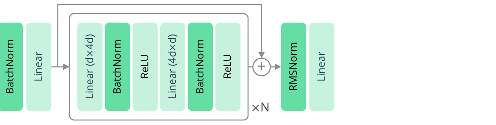
논문 Fig. 2: 역잔차 블록(BN → ReLU, 잔차) 뒤 RMSNorm과 선형 헤드. © 저자, CC BY 4.0. 원문 https://arxiv.org/abs/2604.04539
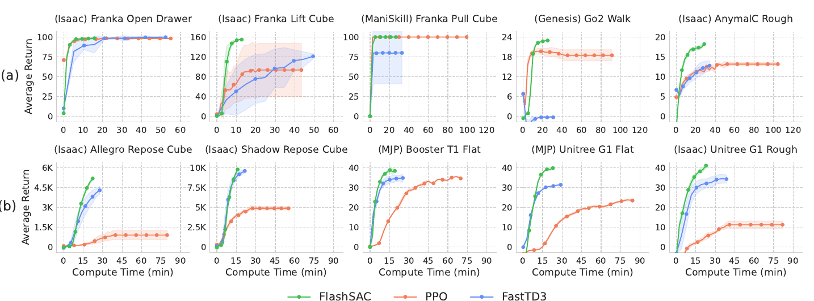
논문 Fig. 3: GPU 시뮬레이터 대표 과제의 학습 곡선(벽시계 축). FlashSAC, PPO, FastTD3. © 저자, CC BY 4.0. 원문 https://arxiv.org/abs/2604.04539
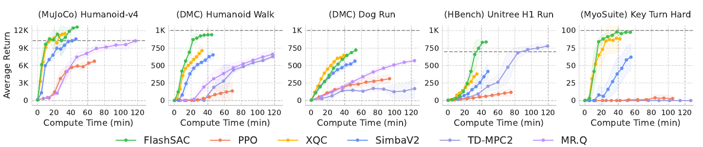
논문 Fig. 4: CPU 시뮬레이터 대표 과제의 학습 곡선(벽시계 축). © 저자, CC BY 4.0. 원문 https://arxiv.org/abs/2604.04539
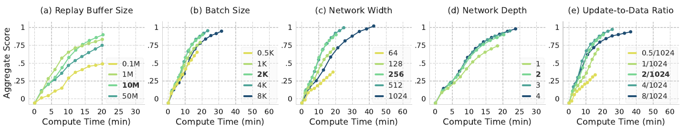
논문 Fig. 8: 재생 버퍼, 배치, 폭, 깊이, UTD의 소거(벽시계 축, 집계 점수). © 저자, CC BY 4.0. 원문 https://arxiv.org/abs/2604.04539
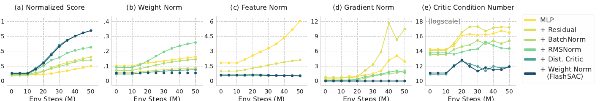
논문 Fig. 9: 구조 소거와 노름·조건수 추적. 조건수 축은 로그(ln 추정). © 저자, CC BY 4.0. 원문 https://arxiv.org/abs/2604.04539
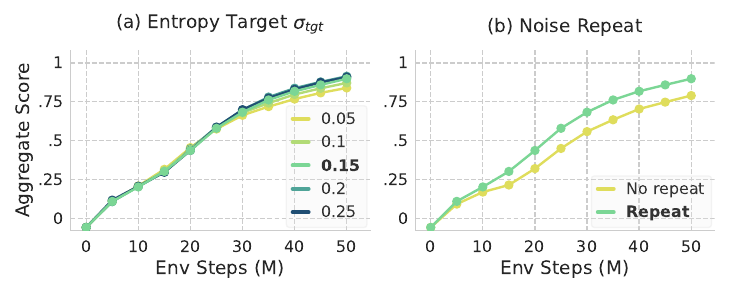
논문 Fig. 10: 엔트로피 목표 σ_tgt와 잡음 반복의 소거. © 저자, CC BY 4.0. 원문 https://arxiv.org/abs/2604.04539
이 절은 논문이 말하지 않거나 근거가 약한 것이다. 공개 CSV와 코드로 확인한 결과는 03과 04에 있다.
| 주장 | 위치 | 공개 자료로 확인 | 판정 |
|---|---|---|---|
| 고차원 과제에서 PPO보다 최종 성능이 높다 | §5.1, Fig. 3b | 10/10 과제에서 FlashSAC(50M) 평균이 PPO(200M)보다 높고, 10/10이 Holm 보정 유의 | 확인 (03 §2) |
| 저차원 과제에서 PPO와 비슷하거나 약간 낫다 | §5.1, Fig. 3a | 15과제 중 12과제에서 평균이 높고, 6과제가 유의. PokeCube는 크게 뒤짐 | 대체로 확인 (03 §2) |
| FastTD3는 몇 과제에서 자주 실패한다 | §5.1 | 7과제에서 시드 하나 이상이 FlashSAC 평균의 절반 미만. Go2 Walk·PegInsertion·RollBall은 5시드 모두 | 확인 (03 §2) |
| CPU 40과제에서 모든 기준선을 앞선다 | §5.2 | 1M step 비교에서 39과제 중 SimbaV2 30, XQC 30, TD-MPC2 31, MR.Q 13(15 중) 에서 평균 우위 | 대체로 확인, 모든 과제는 아님 (03 §4) |
| 시각 8과제에서 기준선과 같거나 높다 | §5.3 | 1M step 비교에서 DrQ-v2 9/10 우위, MR.Q는 3/10 우위(7/10에서 MR.Q가 높음) | 부분 반박 (03 §5) |
| 실물 평지 약 20분 대 3시간, 계단 4시간 대 20시간 | §5.4 | 벽시계 없음. 계단 지형 단계 3.0 도달 env step 비율 약 7.8배(시드 1) | 검증 불가(시간), 경향만 확인 (03 §6) |
| 배치·UTD를 키우면 빨라진다 | §6.2 | env step 기준으로 배치 4k·UTD 4 이상은 기본값과 같거나 높다 | 벽시계 없이는 판단 불가 (03 §7) |
| 조건수는 구조 추가마다 감소하고 최종 구조가 최저 | §6.3 | 중앙값 기준 최저는 최종 구조. 단조는 아님 | 부분 반박 (03 §7) |
| 탐색 σ_tgt 0.15–0.2가 최적, 잡음 반복이 중요 | §6.4 | 0.2 +0.016, 0.25 +0.012, 0.05 −0.062; 반복 끄면 −0.115 | 확인 (03 §7) |
텍스트를 문장 단위로 대조했다(인용 번호를 지운 뒤 비교). 실험 수치, 과제 목록, 부록 표의 값, 하이퍼파라미터 문장은 같다. 바뀐 부분은 다음과 같다.
| 위치 | v1 | v2 |
|---|---|---|
| 날짜·쪽 수 | 2026-04-07, 40쪽 | 2026-05-18, 42쪽 (arXiv v2 2026-05-15) |
| 관련 연구 2.2 첫 문단 (도전 과제 수) | 느림과 불안정 두 가지 | 고차원 행동 공간에서의 탐색을 세 번째 도전으로 추가 |
| 관련 연구 2.1 | PPO 한 문단 | 신뢰 영역 개선(PPO 계열), 행동 공간 확장 탐색, 경로별 추정 분산 감소 등 두 문장 추가 |
| 관련 연구 2.2 | FastTD3 (고차원에서 빠름) | FastTD3와 FastSAC 함께 언급 |
| 관련 연구 2.2 안정화 | 가중치, 특징, 기울기 노름 | 재초기화, 증류, 앙상블, 대체 표적망 목록 추가 |
| 관련 연구 2.2 탐색 | 없음 | 탐색 셋째 갈래(OU, 핑크, 파라미터 잡음, 상태 의존 탐색, 행동 반복) 추가 |
| 관련 연구 2.2 마지막 문단 | 속도와 안정 두 방향을 묶는다고 씀 | 탐색을 더해 세 방향(속도, 안정, 탐색)을 묶는다고 씀 |
| 참고문헌·번호 | 인용 번호 다름 | 재번호 |
v2에서 추가된 문장은 주로 관련 연구와 탐색 설명이다. 실험 결과나 하이퍼파라미터를 바꾸는 내용은 찾지 못했다.
pdftotext로 확인, "©", "copyright", "license" 검색 결과 없음).고차원 로봇 제어에서 SAC의 느린 수렴과 불안정을, "데이터와 모델을 키우고 업데이트를 줄이되, 비판자의 노름과 정규화를 구조적으로 제한한다"는 설계로 함께 다룬 실험적 연구다. 방법의 개별 요소는 기존 연구(CrossQ, SimbaV2/HyperSpherical, FastTD3, Zeta 반복 등)에서 왔고, 기여는 조합과 대규모 평가에 있다(02 §1).
DPG (결정적 정책 경사)
└ DDPG (재생 버퍼, 표적망, OU 잡음) [1509.02971]
└ TD3 (이중 비판자, 지연 갱신, 목표 잡음) [1802.09477 계열]
└ SAC (최대 엔트로피, 자동 온도) [1801.01290]
├ REDQ·DroQ 계열 (앙상블, 드롭아웃)
├ CrossQ (BN + 표적망 없이 교차 배치) [ICLR 2024, 논문 [8]]
├ SimBa, SimbaV2 (단순성 편향, 초구면 정규화) [논문 [44], [45]]
├ XQC (BN 기반 비판자, 높은 표본 효율) [논문 [72]]
├ 병렬 시뮬레이션 계열: FastTD3 [88], FastSAC [87] (약 0.2M 파라미터)
└ FlashSAC (이 논문): 위 요소를 한 알고리즘에 합친다
on-policy 기준선: PPO [85, 86] (RSL-RL 구현으로 비교)
모델 기반·표현 계열: TD-MPC2 [24], MR.Q [19], DreamerV3 [23]
시각 기준선: DrQ-v2 [111] (DDPG 계열 + 이미지 증강), DrM
논문 저자 가운데 Hojoon Lee, Jaegul Choo, Takuma Seno, Donghu Kim는 SimBa(논문 [44])와 초구면 정규화(논문 [45])의 저자이기도 하다. 그래서 가중치 투영과 BN 선택은 그 계열의 연장선으로 읽을 수 있다. 이 분석은 저자 소속을 다루지 않는다.
| 방법 | 무엇을 바꾸나 | FlashSAC와 다른 점 | 논문에서의 위치 |
|---|---|---|---|
| SAC (기준) | 최대 엔트로피, 이중 비판자 | 얕은 MLP, 배치 256, UTD 1, 1M 버퍼 | §3.2 |
| CrossQ [8] | BN과 교차 배치(논문 기술 기준) | FlashSAC는 표적망(τ 0.01)을 유지하고, 가중치 투영과 RMSNorm, 분포형 비판자를 추가 | §4.2 "교차 배치"는 CrossQ를 따른다고 명시 |
| SimbaV2 [45] | 초구면 정규화(가중치와 특징을 단위 노름으로 제한) | 같은 계열. 세부 구조(BN 사용 여부, 액터 적용 범위)는 이 분석에서 확인하지 않았다 | §2.2 |
| XQC [72] | BN 기반 비판자, 높은 표본 효율 | 같은 계열. 비교는 CPU 설정(배치 512, UTD 1)에서만 한다 | §5.2 |
| FastTD3 [88] | 병렬 환경, 작은 네트워크, 빠른 벽시계 | 같은 병렬 환경 계열이지만 큰 모델·큰 배치·적은 업데이트를 쓴다 | §5.1 (GPU 기준선) |
| FastSAC [87] | 병렬 환경에서 SAC 고속화 | 같은 계열. 공개 CSV는 없다 | §2.2 |
| PPO [86] (RSL-RL) | on-policy, 큰 병렬 샘플 | 200M step, 공개 CSV에 비교 곡선 있음 | §5.1, §5.4 |
| TD-MPC2 [24] | 잠재 세계 모델과 MPC | 세계 모델 비용 때문에 벽시계 효율이 낮다고 주장 | §5.2 |
| MR.Q [19] | 모델 기반 보조 목표로 표현 학습 | FlashSAC는 보조 목표를 쓰지 않는다. 논문은 둘이 결합 가능하다고 말함 | §5.3 |
| DrQ-v2 [111] | DDPG 계열 + 이미지 증강 | 시각 과제에서 FlashSAC가 더 안정하다고 주장 | §5.3 |
| DDPG [51] | 결정적 정책, 표적망 | 기준선 아님. 이 저장소의 DDPG 분석에서 은닉층 전체 BN이 LQR 토이에서 성능을 떨어뜨렸다(§3 참조) | §2.2 |
아래 연결은 해당 논문 분석 노트의 결론을 인용한 것이다. 각 노트는 독립적으로 읽을 수 있다.
2026-11-12, HTTP HEAD 요청으로 저장소 주소가 살아 있는지만 확인했다. 별 개수, 라이선스, 최근 push 날짜는 API를 쓰지 않아 확인하지 않았다. 라이선스는 공식 저장소의 LICENSE 파일만 읽었다.
| 저장소 | 성격 | 라이선스 | 주소 확인 | 대조 |
|---|---|---|---|---|
| Holiday-Robot/FlashSAC | 공식 (커밋 87edc90, 2026-04-09) |
MIT (LICENSE 파일 확인) | 200 | 04에서 정적 대조 |
| younggyoseo/FastTD3 | FastTD3 (논문 [88]으로 보이나 저자 확인 안 함) | 미확인 | 200 | 기준선 설명만 |
| FastSAC (논문 [87]) | 저장소 주소를 찾지 못함 (younggyoseo/FastSAC 404) |
미확인 | 미확인 | — |
| dojeon-ai/SimbaV2 | SimbaV2 (논문 [45]와 이름 일치) | 미확인 | 200 | 이름으로 연결 |
| facebookresearch/mrq | MR.Q (논문 [19]와 이름 일치) | 미확인 | 200 | 이름으로 연결 |
| XQC (논문 [72]) | 저장소 주소 미확인 | 미확인 | 미확인 | — |
| nicklashansen/tdmpc2 | TD-MPC2 (논문 [24]) | 미확인 | 200 | 이름으로 연결 |
| leggedrobotics/rsl_rl | PPO 구현 RSL-RL (논문 [86]) | 미확인 | 200 | 기준선 구현 |
| facebookresearch/drqv2 | DrQ-v2 (논문 [111]) | 미확인 | 200 | 시각 기준선 |
| adityab/CrossQ | CrossQ (논문 [8]) | 미확인 | 200 | 교차 배치 원형 |
| isaac-sim/IsaacLab | 시뮬레이터 (논문 [61]) | 미확인 | 200 | 환경 |
| google-deepmind/mujoco_playground | 시뮬레이터 (논문 [112]) | 미확인 | 200 | 환경 |
| haosulab/ManiSkill | 시뮬레이터 (논문 [95]) | 미확인 | 200 | 환경 |
| Genesis-Embodied-AI/Genesis | 시뮬레이터 (논문 [4]) | 미확인 | 200 | 환경 |
| MyoHub/myosuite | 시뮬레이터 (논문 [9]) | 미확인 | 200 | 환경 |
| HumanoidBench (논문 [89]) | 저장소 주소 미확인 | 미확인 | 미확인 | — |
| google-deepmind/dm_control | DMC (논문 [96]) | 미확인 | 200 | 환경 |
| Farama-Foundation/Gymnasium | Gym 계열 (논문 [99]) | 미확인 | 200 | 환경 |
고르는 기준: 이 논문을 실제로 돌리려면 공식 저장소 하나면 된다. 기준선 비교는 PPO는 RSL-RL, 시각은 DrQ-v2 공식 저장소로 맞출 수 있다. FastSAC와 XQC, HumanoidBench의 저장소는 이 분석에서 찾지 못했으므로, 그 기준선은 논문 수치나 공식 CSV에 의존한다.
results/ CSV 47개(공개 학습 곡선). 열은 env_step, value, 지표 이름, 과제, 시드뿐이다. 벽시계 열이 없다. 그래서 벽시계 주장은 아래에서 검증하지 않았다.analysis/recompute_results.py → analysis/recompute_results.json. 부트스트랩 1만 번, 난수 시드 0.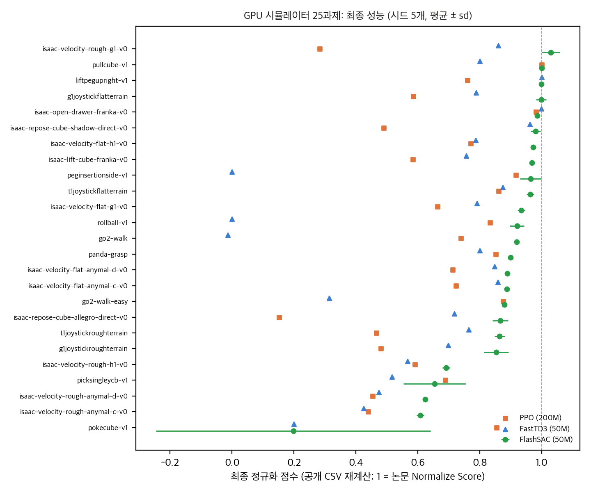
직접 계산: 과제별 최종 정규화 점수(시드 평균 ± sd). 기준선 PPO 200M·50M, FastTD3 50M.
비교는 FlashSAC 50M 대 PPO 200M(논문 설정 그대로), 그리고 같은 50M에서 본 PPO, FastTD3 50M이다.
| 그룹 | 과제 수 | FlashSAC > PPO(200M) | Holm 유의 (vs PPO 200M) | FlashSAC > PPO(50M) | Holm 유의 (vs PPO 50M) | FlashSAC > FastTD3 | Holm 유의 (vs FastTD3) |
|---|---|---|---|---|---|---|---|
| 전체 | 25 | 22 | 14 | 22 | 16 | 22 | 16 |
| 고차원 | 10 | 10 | 10 | 10 | 10 | 10 | 7 |
| 저차원 | 15 | 12 | 4 | 12 | 6 | 12 | 9 |
과제별 최종 값(FlashSAC 평균 ± sd / PPO 200M / PPO 50M / FastTD3 50M):
| 과제 | FlashSAC | PPO 200M | PPO 50M | FastTD3 |
|---|---|---|---|---|
| G1 평지 (Playground) | 0.998 ± 0.016 | 0.585 | 0.163 | 0.788 |
| G1 거친 지형 (Playground) | 0.853 ± 0.040 | 0.481 | 0.006 | 0.698 |
| T1 평지 (Playground) | 0.963 ± 0.012 | 0.861 | 0.424 | 0.874 |
| T1 거친 지형 (Playground) | 0.864 ± 0.017 | 0.466 | 0.122 | 0.764 |
| Allegro 재배치 (IsaacLab) | 0.866 ± 0.025 | 0.152 | 0.049 | 0.718 |
| Shadow 재배치 (IsaacLab) | 0.980 ± 0.016 | 0.490 | 0.381 | 0.962 |
| G1 평지 (IsaacLab) | 0.934 ± 0.012 | 0.663 | 0.613 | 0.790 |
| G1 거친 지형 (IsaacLab) | 1.029 ± 0.029 | 0.283 | 0.098 | 0.859 |
| H1 평지 (IsaacLab) | 0.972 ± 0.007 | 0.771 | 0.792 | 0.786 |
| H1 거친 지형 (IsaacLab) | 0.691 ± 0.012 | 0.591 | 0.340 | 0.567 |
| Anymal-C 평지 | 0.887 ± 0.000 | 0.723 | 0.696 | 0.858 |
| Anymal-D 평지 | 0.889 ± 0.001 | 0.712 | 0.681 | 0.847 |
| Anymal-C 거친 지형 | 0.608 ± 0.012 | 0.439 | 0.382 | 0.425 |
| Anymal-D 거친 지형 | 0.624 ± 0.008 | 0.454 | 0.358 | 0.474 |
| Franka 서랍 | 0.985 ± 0.008 | 0.982 | 0.980 | 0.998 |
| Franka 들기 | 0.968 ± 0.004 | 0.584 | 0.450 | 0.756 |
| Franka 당기기 | 1.000 ± 0.000 | 1.000 | 1.000 | 0.800 |
| Franka 파지 (Genesis) | 0.899 ± 0.004 | 0.851 | 0.852 | 0.800 |
| Go2 걷기 (Genesis) | 0.919 ± 0.005 | 0.739 | 0.776 | −0.013 |
| Go2 쉬운 걷기 (Genesis) | 0.880 ± 0.003 | 0.875 | 0.870 | 0.314 |
| ManiSkill 컵 집기 (YCB) | 0.654 ± 0.101 | 0.688 | 0.696 | 0.516 |
| ManiSkill 구멍 끼우기 | 0.964 ± 0.034 | 0.917 | 0.526 | 0.000 |
| ManiSkill 컵 밀기 | 0.198 ± 0.443 | 0.854 | 0.895 | 0.200 |
| ManiSkill 공 굴리기 | 0.920 ± 0.023 | 0.833 | 0.847 | 0.000 |
| ManiSkill 막대 세우기 | 0.998 ± 0.004 | 0.760 | 0.759 | 1.000 |
읽는 법과 예외:
Figure: report/figures/fig_gpu_final.png.
위 표의 "PPO 50M" 열과 같다. 같은 50M에서 FlashSAC가 PPO보다 높은 과제는 22개다. 차이가 가장 작은 과제는 Franka 서랍(0.985 대 0.980), 가장 큰 과제는 G1 거친 지형(1.029 대 0.098)이다.
FlashSAC는 1M step이고 기준선은 각자 더 긴 예산(PPO 4M, TD-MPC2 최대 14M, 나머지 1M)으로 돌렸다. 같은 1M에서 보간해 비교했다.
| 기준선 | 시드 수 | 과제 수 | FlashSAC 평균이 높은 과제 | Holm 유의 | 1M 평균 (정규화) |
|---|---|---|---|---|---|
| PPO | 5 | 39 | 37 | 28 | 0.259 (FlashSAC 0.872) |
| SimbaV2 | 10 | 39 | 30 | 9 | 0.803 |
| XQC | 10 | 39 | 30 | 8 | 0.791 |
| TD-MPC2 | 4 | 39 (검정 34) | 31 | 8 | 0.647 |
| MR.Q | 10 | 15 | 13 | 8 | 0.765 |
해석: 평균에서는 FlashSAC가 모든 기준선에 앞선다. 하지만 SimbaV2·XQC·TD-MPC2와의 차이는 39과제 중 8–9개에서만 유의하다. "모든 기준선을 일관되게 앞선다"는 본문 문장은 평균 기준에서만 맞다. PPO와의 차이는 큰 편이다.
과제 예: Ant (1M) FlashSAC 0.749, PPO 0.099, SimbaV2 0.733, XQC 0.751, TD-MPC2 0.469, MR.Q 0.681.
Figure: 표만 있음 (analysis/recompute_results.json의 cpu_state).
DMC 10과제 중 나머지 3개(Adroit 계열 이름)는 정규화 값이 없어 뺐다.
| 기준선 | 과제 수 | FlashSAC 평균이 높은 과제 | Holm 유의 |
|---|---|---|---|
| DrQ-v2 | 10 | 9 | 6 |
| XQC | 8 | 5 | 3 |
| DrM | 10 | 5 | 2 |
| MR.Q | 10 | 3 | 2 |
해석: DrQ-v2에 대해서는 본문 주장과 맞는다. MR.Q에 대해서는 같은 1M에서 MR.Q가 7과제에서 높다. 본문은 점근 성능에서 "모든 기준선과 같거나 앞선다"고 쓴다. 이 1M 비교에서는 MR.Q에 대해 그 주장이 맞지 않는다. 점근 성능 비교는 기준선의 긴 예산 곡선이 필요해서 여기서는 하지 않았다.
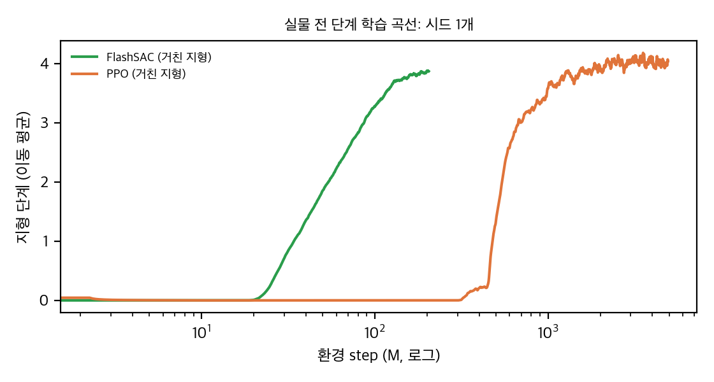
직접 계산: 거친 지형 지형 단계의 이동 평균, 환경 step(로그축). 시드 1개.
avg_terrain_level) 하나로만 비교한다. 벽시계는 없다.Figure: report/figures/fig_sim2real_rough.png.
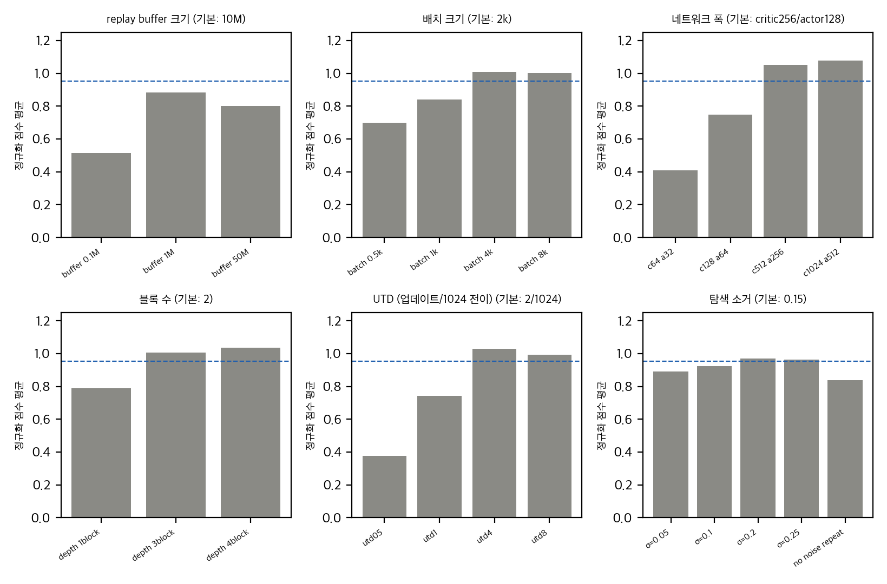
직접 계산: 소거 설정별 정규화 점수 평균(4과제). 점선은 기본값.
과제는 Shadow·Allegro 재배치, G1 평지·거친 지형이다. 기준은 같은 4과제의 FlashSAC 기본 실행이다(평균 0.952). 값은 정규화 점수 평균(4과제)이다.
| 축 | 설정 → 정규화 점수 평균 |
|---|---|
| 재생 버퍼 | 0.1M → 0.515, 1M → 0.883, 10M → 0.952, 50M → 0.799 |
| 배치 | 0.5k → 0.700, 1k → 0.841, 2k → 0.952, 4k → 1.009, 8k → 1.003 |
| 비판자 폭 / 액터 폭 | 64/32 → 0.408, 128/64 → 0.750, 256/128 → 0.952, 512/256 → 1.053, 1024/512 → 1.076 |
| 블록 수 | 1 → 0.790, 2 → 0.952, 3 → 1.007, 4 → 1.035 |
| UTD (/1024) | 0.5 → 0.376, 1 → 0.744, 2 → 0.952, 4 → 1.027, 8 → 0.992 |
| 엔트로피 목표 σ | 0.05 → 0.890, 0.1 → 0.923, 0.15 → 0.952, 0.2 → 0.969, 0.25 → 0.964 |
| 잡음 반복 | 없음 → 0.837 (기준 0.952) |
해석 (env step 기준):
Figure: report/figures/fig_ablation_scaling.png.
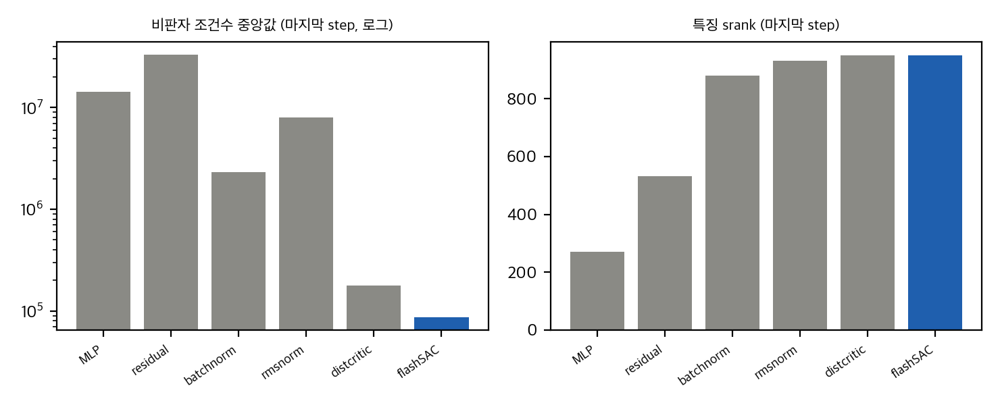
직접 계산: 비판자 조건수(중앙값, 로그축)와 srank. 마지막 step.
| 구조 (누적) | 조건수 중앙값 | 조건수 기하평균 | srank | 죽은 뉴런 비율 | 특징 크기 | 기울기 노름 |
|---|---|---|---|---|---|---|
| a MLP | 1.43e7 | 1.00e7 | 271 | 0.216 | 6.14 | 3.78 |
| b +잔차 | 3.31e7 | 2.75e7 | 533 | 0.162 | 2.13 | 10.77 |
| c +BN | 2.32e6 | 4.42e6 | 880 | 0 | 0.52 | 2.12 |
| d +RMSNorm | 7.99e6 | 1.61e6 | 932 | 0 | 0.55 | 1.66 |
| e +분포형 | 1.78e5 | 1.33e5 | 950 | 0 | 0.55 | 0 |
| f +가중치 정규화 (FlashSAC) | 8.73e4 | 1.43e5 | 950 | 0 | 0.51 | 0 |
본문 주장 대 자료:
Figure: report/figures/fig_stability.png.
analysis/derivation_checks.py, 공식 코드를 실행하지 않음)목표 엔트로피 (식 7). H̄ = ½|A| log(2πe σ²), σ = 0.15. 차원당 −0.478 nats. 행동 차원별 목표는 6 → −2.87, 19 → −9.09, 20 → −9.56, 29 → −13.87, 37 → −17.69. 코드의 엔트로피는 tanh로 눌린 행동의 log π이므로 같은 σ에서 차원당 약 0.022 nats 낮다(몬테카를로 −0.5006). 이 차이는 작지만, 식 7은 pre-tanh 가우시안 기준이라는 것을 기억해야 한다.
Zeta 잡음 반복. P(k) ∝ k⁻², k ≤ 16. E[k] = 2.13. P(k=1) = 0.63, P(k ≥ 8) = 0.046. 잡음을 새로 뽑는 step 비율 = 1/E[k] = 0.47. 평균적으로 2.1 step마다 잡음이 바뀐다.
재생 비율 (샘플 기준). 업데이트 수 × 배치 ÷ 새 전이:
| 설정 | 전이당 업데이트 | 전이당 배치 샘플 수 |
|---|---|---|
| GPU (1024 env, 업데이트 2, 배치 2048) | 0.00195 | 4 |
| CPU (1 env, 업데이트 1, 배치 512) | 1 | 512 |
| 시각 (1 env, UTD 0.5, 배치 256) | 0.5 | 128 |
"UTD를 낮췄다"는 말은 GPU에만 맞는다. CPU 설정에서는 전이 하나를 평균 512번 뽑는다. 업데이트 횟수보다 샘플 재사용이 학습을 결정한다는 뜻이다.
학습률 스케줄. 50,000,896 step ÷ 1024 = 48,829 상호작용, 업데이트 97,658회, 액터 업데이트 48,829회. 워밍업 step = int(1e-6 × 97,658) = 0이라 워밍업이 없다.
파라미터 수. 액터 약 0.29M(관측 157, 행동 20 기준), 비판자 앙상블 약 2.25M. 합계 2.54M. 논문 "2.5M"은 이 합계다. 표준 SAC 기준선(0.2–0.5M)과 비교하려면 비판자를 두 개로 세야 한다.
보상 정규화 (식 6) 는 reward_normalization.py:32–35와 맞는다(04 D17).
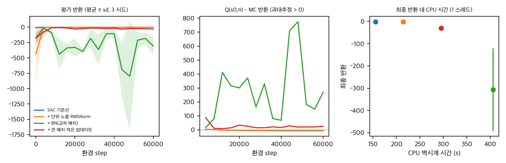
직접 계산(토이): 평가 반환(평균 ± sd, 3 시드), 과대추정 지표, 최종 반환 대 CPU 시간.
목적. FlashSAC의 안정화 요소가 SAC를 실제로 바꾸는지 CPU에서 확인한다. 공식 코드는 실행하지 않았다. 토이는 이 분석에서 새로 만든 SAC다.
과제. 상태 4차원, 행동 2차원(tanh로 [-1, 1]), 선형 동역학 x' = Ax + Bu + 0.05w(A의 스펙트럼 반지름 0.9, 시드별 고정), 보상 −(xᵀx + 0.1|u|²), 구간 100 step. 병렬 환경 16개, 총 60,000 전이, 시드 3개. 초기 정책의 평균 반환은 −8.73이다.
설정.
| 설정 | 내용 |
|---|---|
| base | SAC 기준선. MLP 2×256, ReLU, 배치 256, 환경 step 16개당 업데이트 16회 |
| norm | base + 매 업데이트 뒤 가중치 단위 노름 투영 + RMSNorm 특징 |
| norm_bn | norm + 은닉층 BN(모멘텀 0.01), 현재와 다음 상태를 한 배치로 묶어 계산 |
| fs_sched | norm_bn + 배치 2048, 환경 step 16개당 업데이트 1회 (논문의 "큰 배치, 적은 업데이트" 방향) |
Q 과대추정은 Q(s₀, π(s₀)) − 같은 정책의 600 step 할인 반환(16개 시작 상태)으로 잰다.
결과 (60k 환경 step, 시드 3).
| 설정 | 최종 반환 (시드별) | 평균 ± sd | 업데이트 수 | 배치 | 마지막 과대추정 (평균) | CPU 시간 (s) |
|---|---|---|---|---|---|---|
| base | −1.57, −1.90, −1.32 | −1.60 ± 0.29 | 58,016 | 256 | −7.2 | 155 |
| norm | −1.53, −1.95, −1.51 | −1.66 ± 0.24 | 58,016 | 256 | −7.5 | 214 |
| norm_bn | −454.9, −365.2, −99.4 | −306.5 ± 184.9 | 58,016 | 256 | +269.8 | 406 |
| fs_sched | −17.8, −38.8, −34.4 | −30.3 ± 11.1 | 3,626 | 2048 | +25.3 | 295 |
Figure: report/figures/fig_toy_sac.png.
해석.
한계와 판정. 시드 3개, 과제 1개, 얕은 망, 배치 256 기준이라 논문 설정과 다르다. 그래서 일반화하면 안 된다. 다만 방향은 분명하다. 이 토이 규모에서 BN은 이득이 아니라 해였고, 이것은 02 §3에서 본 DDPG 토이(은닉층 BN이 해로움)와 같은 방향이다. BN 실패의 정확한 원인(배치 크기, 이동 평균과 배치 통계의 차이, 구현)은 아직 가르지 못했다. 배치 2048에서 BN만 쓰는 진단과 평가 모드와 학습 모드 비교가 다음 단계다.
| 파일 | 내용 |
|---|---|
analysis/recompute_results.py / .json |
공개 CSV 재계산 (§2–7) |
analysis/derivation_checks.py / _results.json |
유도와 검산 (§8) |
analysis/sac_stabilizer_toy.py / sac_stabilizer_toy_results.json |
SAC 토이 (§9) |
analysis/plot_figures.py |
그래프 (report/figures/fig_*.png) |
87edc90 (LICENSE 파일 커밋, 2026-04-09). repo/에 --depth 1로 얕게 복제했다. 라이선스 MIT. 커밋 이력은 1개뿐이다.uv sync, 설정 로드 모두 안 함). 논문 식과 부록 표를 코드 줄과 대조했다.repo/ 기준이다.analysis/derivation_checks.py에서 계산했다(03 §8).repo/results/)는 재계산에 썼다(03).판정: 일치는 논문 설명과 코드가 같다. 차이는 코드와 논문 본문·표가 다르다. 문서 불일치는 논문 안에서 서로 다르다. 미기재는 논문에 없고 코드에 있다. 부재는 논문에 있으나 공개 코드에 없다.
| # | 항목 | 논문 | 코드 (줄) | 판정 |
|---|---|---|---|---|
| D1 | 비판자 손실 | 식 (4)는 MSE. §4.2는 분포형 비판자와 교차 엔트로피 | flash_rl/agents/flashSAC/update.py:249 ce_loss = -(target_probs · pred_log_probs).sum. 출력은 layer.py EnsembleCategoricalValue의 101 bin softmax |
문서 불일치 (식 표기만 다름). 구현은 §4.2 설명과 일치 |
| D2 | 최소 이중 Q | 식 (5)의 min Q | update.py:15–31 _select_min_q_log_probs: 샘플마다 기대 Q가 작은 쪽 비판자의 분포를 고른다 |
일치 (기대값 기준 min) |
| D3 | 목표 값 | 식 (5): r + γ(min Q − α log π) | update.py:56 target_bin_values = reward + gamma*(bin_values - actor_entropy)*(1-done), actor_entropy = α·log π. update.py:57 지지 [min_v, max_v]로 자른다 |
일치. 지지로 자르는 단계는 논문에 없다(미기재) |
| D4 | n-step | 표 9: n = 1 (GPU). 표 11: 시각 n = 3 | scripts/run_isaaclab.sh:48 n_step=3. 다른 GPU 스크립트(run_maniskill.sh, run_genesis.sh, run_mujoco_playground.sh)와 configs/agent/flashSAC.yaml의 기본값은 1. 버퍼의 n-step 반환은 torch_buffer.py:103–132 |
문서 불일치: IsaacLab만 n=3 |
| D5 | 종료와 절단 | 명시 없음 | 목표는 terminated만 쓴다(update.py 배치 키). 보상 정규화의 누적 반환 리셋은 terminated or truncated(reward_normalization.py _update_reward_stats) |
미기재 (표준적 처리) |
| D6 | 블록 구조 | 그림 2: Linear → BN → ReLU → Linear → BN → ReLU → (+잔차). 본문 "pre-activation BN" | layer.py:91–107 FlashSACBlock: w1 → norm1 → relu → w2 → norm2 → relu → +residual. 그림과 같다 |
일치. 본문의 "pre-activation"은 명칭 혼동: BN은 선형 뒤, ReLU 앞이다 |
| D7 | 최종 정규화 | RMSNorm으로 특징 노름을 제한 | network.py post_norm = UnitRMSNorm 후 predictor. layer.py:62–75: F.rms_norm, 가중치 노름 √d |
일치 |
| D8 | 가중치 투영 | 각 가중치 벡터를 단위 노름, (γ, β)는 노름 √d(본문은 "d"로 보이나 PDF 기호 손실) | 단위 행 투영: layer.py:19–24 (F.normalize, 입력 차원 기준). BN (γ,β): layer.py:52–57 (노름 √d). 호출은 update.py:155(액터), update.py:269(비판자), agents/utils/network.py normalize_parameters. 온도 파라미터는 투영하지 않음 |
일치 (√d 여부는 PDF 추출로 확인 불가; 코드는 √d) |
| D9 | 교차 배치(비판자) | 현재와 다음 상태를 한 배치로 묶어 BN 통계 공유 | update.py:214 obs_all = cat(obs, next_obs), 표적·예측 비판자 모두 이 배치로 계산 |
일치 |
| D10 | 교차 배치(액터 갱신) | 논문 본문은 비판자 쪽만 말함 | update.py:105 actor_obs_all = cat(obs, next_obs)로 액터를 통과시킨 뒤 앞 절반만 씀. 그래서 액터 BN 통계는 다음 상태 포함 2B 샘플로 계산됨 |
미기재 (코드 특이점) |
| D11 | 액터 갱신 때 비판자 모드 | 명시 없음 | update.py:116–123: critic(..., training=False). 액터 손실의 Q는 BN 이동 평균을 쓰고, 표적·예측 비판자 호출(update.py:219, :242)은 training=True로 배치 통계를 씀 |
미기재 (모드가 다름) |
| D12 | 표적 비판자 EMA | 식 (3), τ = 0.01 | agents/utils/network.py _ema_update_fn: torch._foreach_lerp_(params, src, τ). 매개변수만 갱신하고 BN 버퍼(이동 평균)는 갱신하지 않음 |
일치 (버퍼 제외는 미기재) |
| D13 | 액터 지연 갱신 | 표 9: update delay 2 | agent.py:501 do_actor_update = (step % actor_update_period == 0) |
일치 |
| D14 | 온도와 목표 엔트로피 | 식 (7): H̄ = ½ | A | log(2πeσ²), σ = 0.15 |
| D15 | 잡음 반복 | §4.3: 길이 k 동안 ε 고정. "짧은 로컬 상태" | agent.py:245 `reinit = (cur_count == 0) |
(cur_count >= cur_n). 카운터와 길이 cur_n은 스칼라 텐서라 **모든 환경이 같은 시점에 갱신**. 잡음 벡터는 randn_like(mean)로 환경마다 뽑힘(agent.py:247`) |
| D16 | Zeta 분포 | P(k) ∝ k^(-s), s = 2, 최대 16 | agent.py:394 _build_truncated_zeta_cdf(mu=2.0, max_n=16); agent.py:206 pmf = ns ** (-mu) |
일치. E[k] = 2.13, 매 갱신 비율 0.47 (03 §8) |
| D17 | 보상 정규화 | 식 (6): r̄ = r / max(√(σ²_G+ε), G_max,t / G_max) | reward_normalization.py:32–35 denominator = max(sqrt(G_var+eps), G_r_max/G_max); G_r_max는 지금까지 |
G_r |
| D18 | 학습률 | 표 9: 코사인 감쇠 3e-4 → 1.5e-4 | configs/agent/flashSAC.yaml: 워밍업 비율 1e-6 → int(1e-6 × 97,658) = 0이라 워밍업 없음. 감쇠 길이는 전체 업데이트 수 |
일치 (워밍업 없음은 미기재) |
| D19 | 기울기 클리핑 | §4.2: "기울기 노름을 명시적으로 제한" | grep clip_grad 결과 0건. 기울기 노름은 가중치 투영을 통해서만 간접 제한 |
차이 (표현이 과함) |
| D20 | 혼합 정밀도 | 본문: 벽시계 5–10% 감소 | GPU 설정 use_amp: true(run_isaaclab.sh): autocast(fp16) + GradScaler(update.py). 통계는 float32(layer.py 주석). CPU 설정은 use_amp=false |
일치. 5–10% 수치는 코드에 측정 코드 없음 (D29) |
| D21 | 컴파일 | §4.1: JIT | agent.py _resolve_compile_mode: torch ≥ 2.9는 max-autotune, 그 아래는 reduce-overhead. README는 Python 3.11에서 2.9.1을 쓴다고 함 |
일치 (설치 환경 종속) |
| D22 | 병렬 환경·버퍼 | 1024 env, 버퍼 10M | run_isaaclab.sh: num_train_envs=1024, buffer_max_length=10_000_000, buffer_device_type='cuda', buffer_min_length=100_000. 기본 설정은 10k. train.py:123–125: 버퍼가 찰 때까지 무작위 행동 |
일치. 최소 버퍼 크기(100k)와 무작위 시작은 논문에 없음 (미기재) |
| D23 | UTD | 본문: 2/1024. 표 9: "2/2048" | run_isaaclab.sh: updates_per_interaction_step=2, 상호작용 1회에 전이 1024개(train.py:121 env_step = interaction_step * num_train_envs). 즉 2/1024 |
문서 불일치 (표 9 오기로 보임). 코드는 본문과 같다 |
| D24 | 배치 크기 | GPU 2048, CPU 512, 시각 256 | GPU 스크립트 2048, CPU 스크립트 512(run_mujoco.sh 등). 시각 설정 없음 (D26) |
일치 (시각 제외) |
| D25 | 시드 | 명시 없음 | 스크립트 시드 (0 1000 2000 3000 4000), 공개 CSV도 같은 5개(FlashSAC 전부) |
미기재 (논문은 개수를 적지 않음) |
| D26 | 시각 기반 학습 | §5.3: 3층 합성곱 인코더, 프레임 스택 3, 3단계 반환, 액션 반복 2 | 픽셀 관련 코드 0건(from_pixels, conv, frame_stack 검색). dmc.py는 상태 관측만 쓴다. run_dmc.sh는 배치 512, n = 1로 상태 기반 설정 |
부재: 공개 코드에 시각 설정이 없다. 시각 CSV(visualRL/)는 있다 |
| D27 | 평가 빈도 | 학습 곡선 | configs/flashSAC_base.yaml: 평가와 로그 주기 = 총 상호작용 수 / 10. 곡선은 실행당 11점. GPU는 약 5M step 간격, CPU는 약 0.1M 간격 |
미기재 (곡선 해상도) |
| D28 | 평가 방식 | 명시 없음 | 평가는 결정적 행동 tanh(mean)(agent.py:241), 평가 에피소드 1024개(GPU), 50개(CPU) |
미기재 |
| D29 | 벽시계 측정 | 부록 A: 환경 시간 + 업데이트 시간 합산, 업데이트 시간은 한 과제에서 측정해 재사용 | train.py, flash_rl/common/logger.py, flash_rl/evaluation.py에 시간 측정 호출 없음. 공개 CSV에도 시간 열이 없다 |
부재: 벽시계 측정 코드가 공개되지 않음 |
| D30 | 실물 배포 | §5.4, 부록 D: PD 제어 200 Hz, Unitree SDK, ROS 2 노드, Pybind | 배포 코드 없음. uv.lock과 CSV, ManiSkill 스크립트의 과제 이름에만 Unitree 문자열 있음 |
부재: 실물 배포 코드 없음. 학습 환경(IsaacLab 설정)만 있음 |
| 항목 | 논문 (표 9–10, 본문) | 공개 스크립트 (GPU / CPU) |
|---|---|---|
| 환경 수 | 1024 / 1 | 1024 / 1 |
| 배치 | 2048 / 512 | 2048 / 512 |
| UTD (업데이트/상호작용 단위) | 2/1024 (표 9는 2/2048) | 2 / 1 |
| 버퍼 | 10M / 1M | 10M / 1M |
| 블록 수 (액터, 비판자) | 2, 2 | 2, 2 (configs/agent/flashSAC.yaml) |
| 은닉 폭 (액터, 비판자) | 128, 256 | 128, 256 |
| 이중 비판자, 원자 수 | 2, 101 | 2, 101 |
| 표적 τ, 액터 지연 | 0.01, 2 | 0.01, 2 |
| n-step | 1 (표 9), 3 (시각) | 3 (IsaacLab 스크립트), 1 (나머지) |
| 감마 | IsaacLab 0.99, Playground 0.97 | 스크립트별 0.99 |
| 학습률 | 3e-4 → 1.5e-4 (코사인) | 같음 |
| σ_tgt, 온도 초기 | 0.15, 0.01 | 같음 |
| ζ 지수, 최대 반복 | 2, 16 | 같음 |
| 시드 | (미기재) | 0, 1000, 2000, 3000, 4000 |
| 항목 | 액터 | 비판자 앙상블(2개) | 합계 |
|---|---|---|---|
| Shadow Repose (관측 157, 행동 20) | 290,402 | 2,251,150 | 2,541,552 |
| G1 평지 (관측 123, 행동 37) | 290,368 | 2,242,378 | 2,532,746 |
| HalfCheetah (관측 17, 행동 6) | 268,590 | 2,171,686 | 2,440,276 |
논문 §4.1의 "2.5M 파라미터"는 액터와 비판자 앙상블을 합친 값과 맞는다. 액터만은 0.3M 남짓이다. 표준 SAC 기준선(0.2–0.5M)과 비교할 때는 비판자 두 개를 함께 세어야 같은 기준이다.
train.py 루프: 상호작용 1회에 process_transition → 버퍼가 찼으면 update_counter += updates_per_interaction_step만큼 agent.update().agent.py update(): 버퍼에서 배치 샘플 → 보상 정규화(식 6) → _update_networks: 액터(2회마다 1회) → 온도 → 비판자 → 표적 EMA.update.py update_critic: 교차 배치로 표적 분포 계산(_compute_categorical_td_target) → 교차 엔트로피 → Adam 갱신 → 가중치 투영.sample_actions는 BN 이동 평균으로 평균·표준편차를 얻고, temperature=1로 잡음을 곱해 행동을 만든다. 잡음은 Zeta 길이만큼 유지된다.판정: 공식 재현은 이 맥에서 불가능하다. 알고리즘을 자기 설정에 옮기는 것과 CPU 소규모 검증은 가능하다.
| 항목 | 필요 자원 | 이 맥(Apple M4 Pro, 약 24 GiB 통합 메모리, MPS, CUDA 없음)에서 | 노력 | 판정 |
|---|---|---|---|---|
| 공식 GPU 재현: IsaacLab, MuJoCo Playground, ManiSkill, Genesis 25과제 × 시드 5 | RTX 30/40/50 계열 또는 Blackwell GPU (README), Ubuntu 22.04/24.04, Python 3.10/3.11, IsaacLab 설치 | CUDA가 없다. 저장소가 CUDA 경로를 전제하고, buffer_device_type='cuda'. MPS로는 같은 설정을 돌릴 수 없다 |
큼. 대략 과제당 30–90 min × 시드 5 × 25과제 (논문 Fig. 3 벽시계 축 기준) ≈ 100 GPU시간 이상 | 불가 |
| 공식 CPU 재현: MuJoCo v4 / DMC / MyoSuite / HumanoidBench, 1 env, 배치 512 | Python 3.10/3.11, uv, gymnasium, mujoco (README는 MuJoCo 2.1 "mujoco210" 필요), dm_control, myosuite, humanoid-bench | .venv에 torch 2.15와 mujoco 4.0.0이 있으나 gymnasium은 없다. 설치는 승인 필요 |
중간. 토이 측정(2 ms/업데이트, 16 업데이트/iter)에서 외삽하면 실행당 약 1–2시간(1M 업데이트, 배치 512) | 조건부: 패키지 설치 승인 후 과제 1–2개, 시드 1–2개 정도 |
| 시각 DMC 재현 | GPU, 렌더링(EGL), 시각 인코더 코드 | 공개 저장소에 시각 설정 코드 없음 (D26) | 큼 | 불가 (코드 없음) |
| 실물 G1 배포 | Unitree G1, GPU 학습, ROS 2, Unitree SDK | 로봇 없음. 배포 코드 없음 (D30) | 매우 큼 | 불가 |
| 알고리즘 재구현 (PyTorch, 이 저장소 구조 참고) | 없음 (CPU와 MPS 가능) | 토이로 확인 (03 §9). 교차 배치, 가중치 투영, 분포형 비판자는 약 300줄 | 중간 | 가능 |
| 공개 CSV 재계산 (정규화, 유의성, 소거 지표) | 없음 | 완료 (03) | 완료 | 완료 |
그래서 실제로 할 수 있는 것은 두 가지다. (a) 공개 CSV와 논문 표로 주장 점검(이 분석에서 완료), (b) CPU에서 알고리즘 요소를 작은 과제에 옮겨 보기(토이 완료). 공식 GPU 재현은 CUDA 장비가 있어야 하고, 실물 배포는 로봇이 있어야 한다.